Imprint
Interactive Website Concept
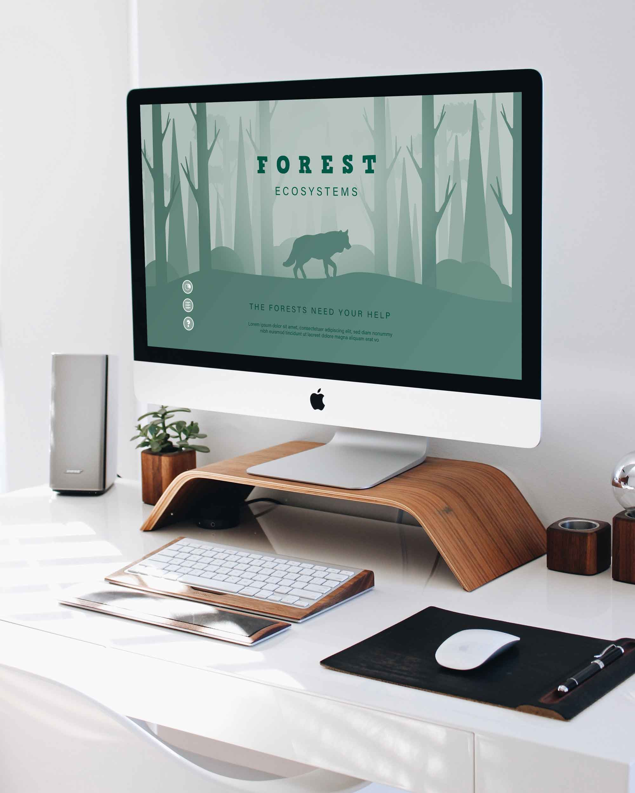
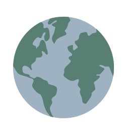
Imprint is an interactive website concept that allows users to answer questions about their ecological footprint and receive the results of what their environmental impact is. The unique part about this website is that it will show the user exactly which type of ecosystem they are contributing the most waste to (forest, desert, ocean, etc...). Each ecosystem will have a unique illustration.
To create an interactive experience for the user in order to motivate them enough to reduce their ecological footprint. Creating a personalized experience for users will allow them to view their ecological impacts more precisely." alt-graphic="A graphic of the Imprint logo to represent the brand.
I started this project by sketching out a single-page, non-scrollable layout for each page. I wanted imagery to be the main focus of the website, making content as simple and brief as possible.
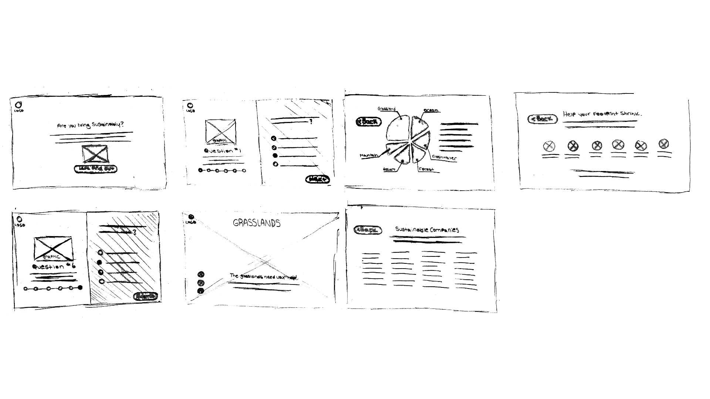
The user begins the test by answering some questions about the ways they live in relation to waste and sustainability. As the user progresses through each question, the graphic on the left of the screen begins to fill in and become fully illustrated.
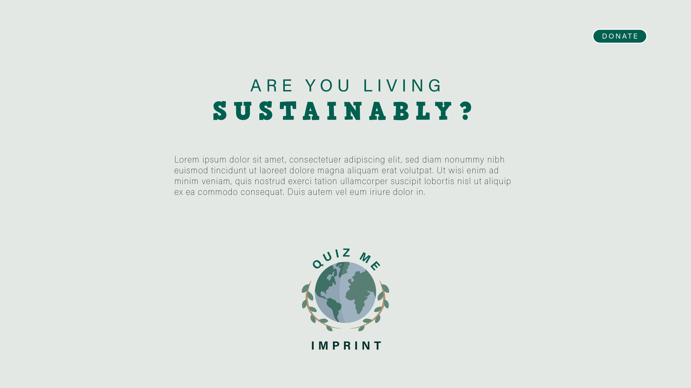
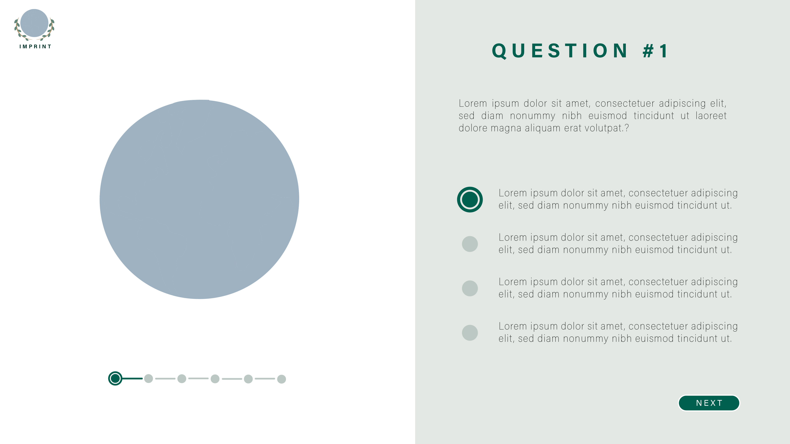
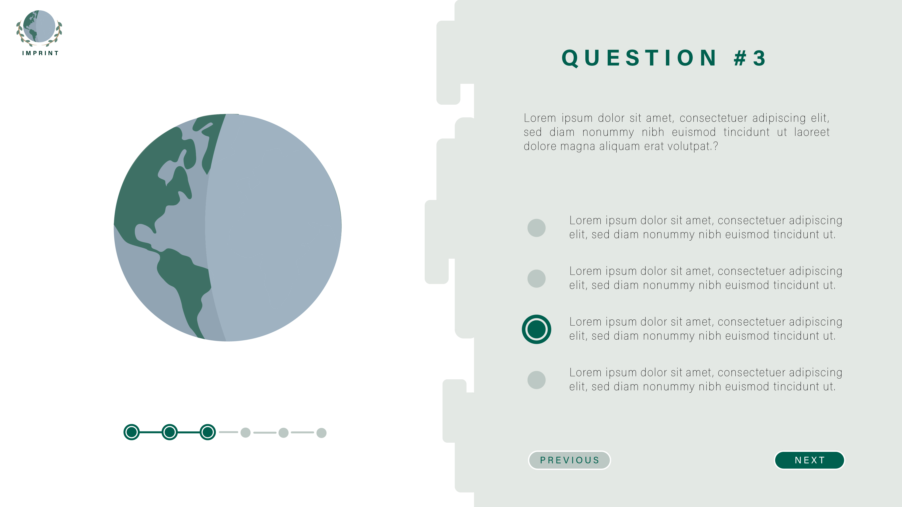
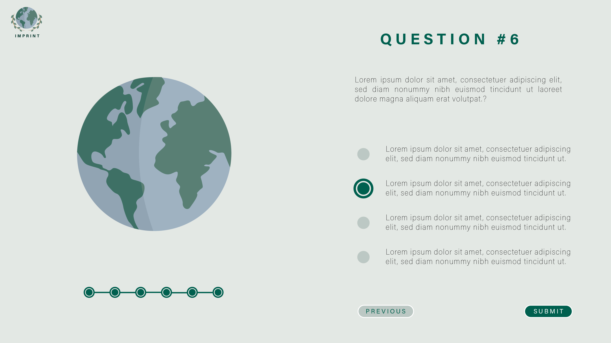
Once each question has been filled out, the user will be brought to a screen that shows them which ecosystem they are doing the most damage to. This screen will also give the user details on the breakdown of how much waste they're contributing to each ecosystem. They will also get information on what they can do to help reduce their carbon footprint, as well as any companies that are eco-friendly.
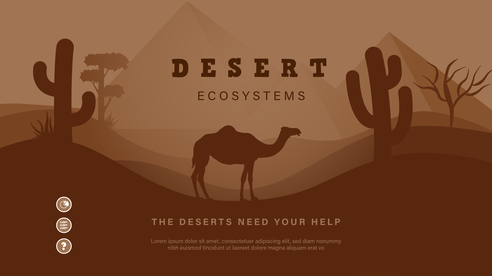
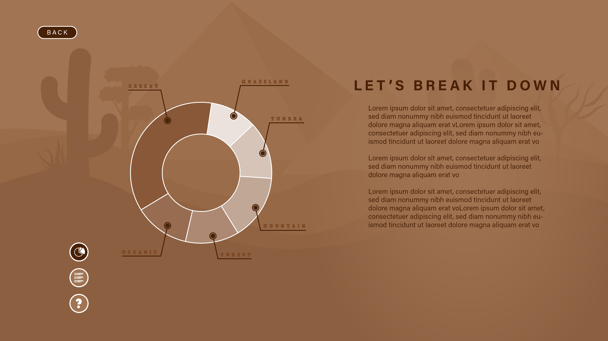
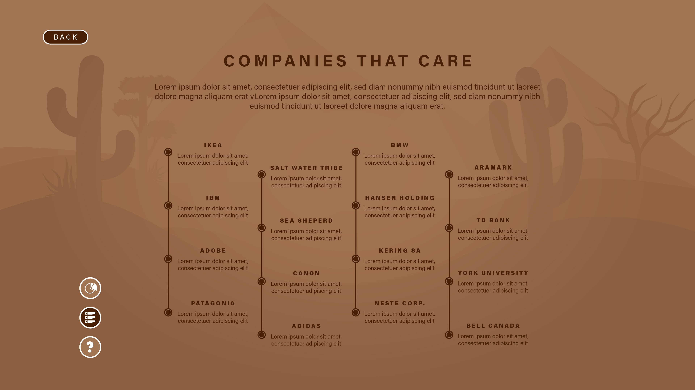
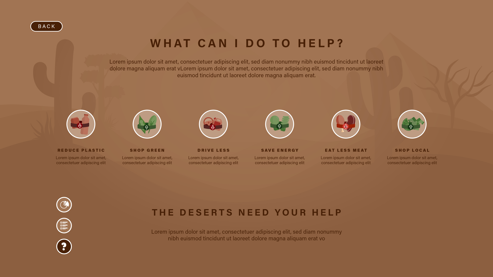
The buttons on each ecosystem page will pup open a screen that outlines the details of their results. The icons are shown below and represent the 'breakdown', 'helpful tips', and 'sustainable companies' popups, respectively. I also made some icons to represent each tip on the 'helpful tips' popup. They are illustrated in a way to help user immediately grasp what they need to reduce, and what they need to increase for sustainable living.
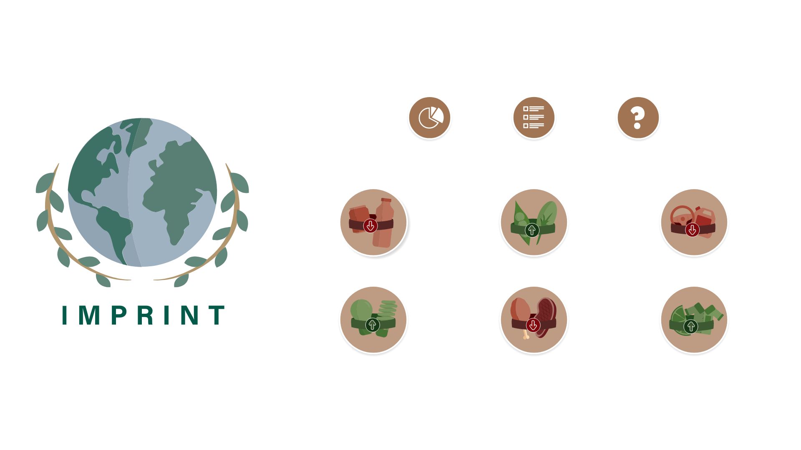
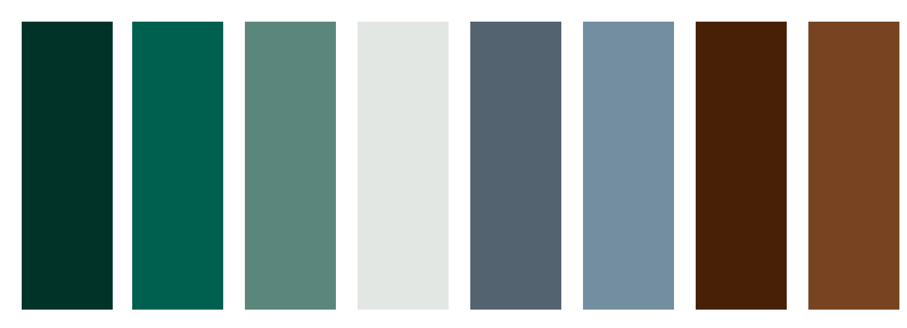
There isn't necessarily a distinct colour palette for the brand other than the logo. Since the colour palette will change in relation to the user's answers, each ecosystem page will contain muted colours to represent the support each ecosystem needs in order to survive.
The Comic Serif Pro was the perfect choice for a heading font. It gives off an organic feel with the thickness and angle of the serifs; very reflective of a sustainable oriented design. In order to ground this dramatic font, Acumin Pro was used as a clean body copy to be paired with Comic Serif Pro.
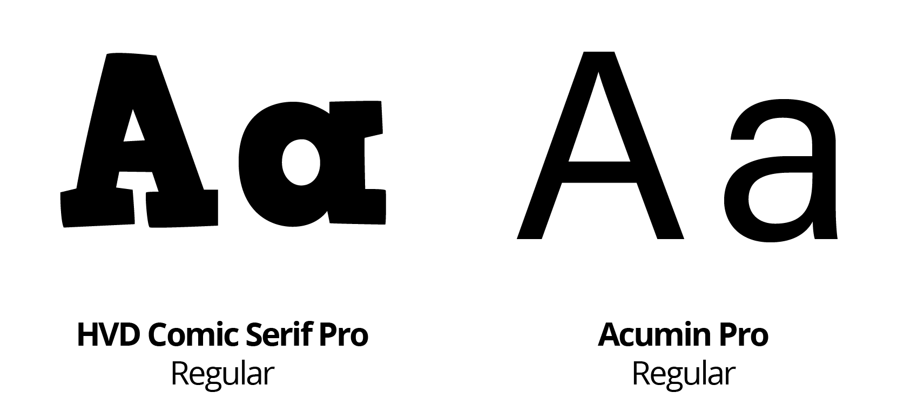
The final design is an interactive and graphical website design. Each ecosystem graphic is unique and visually engaging to hopefully resonate a message with the user even after they leave the webiste.
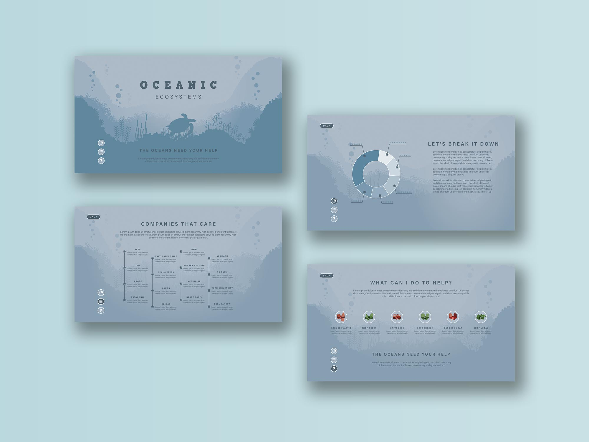
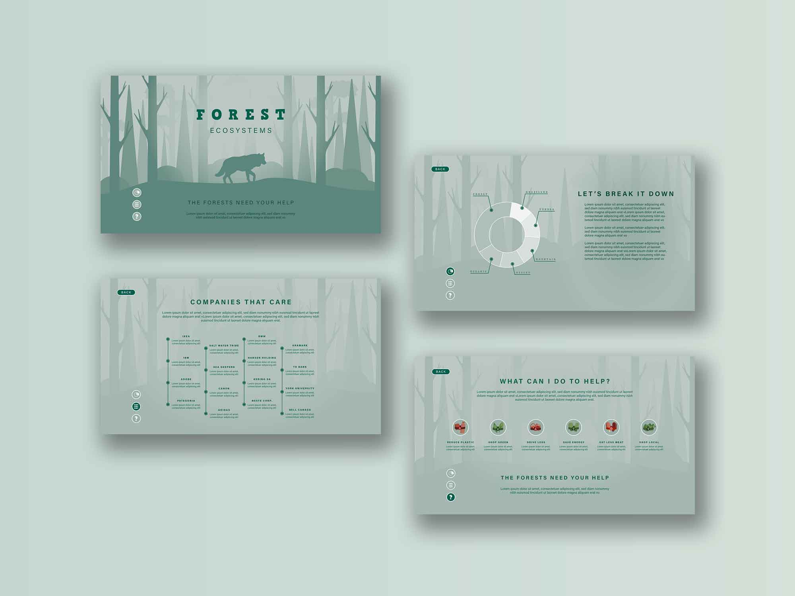
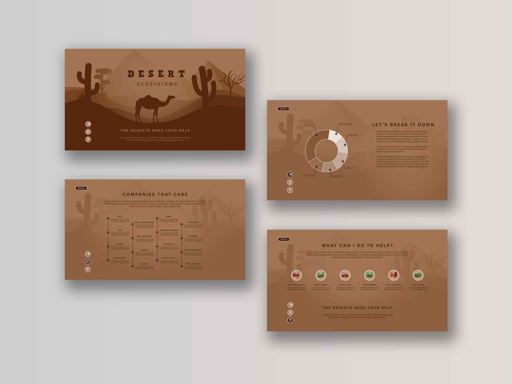